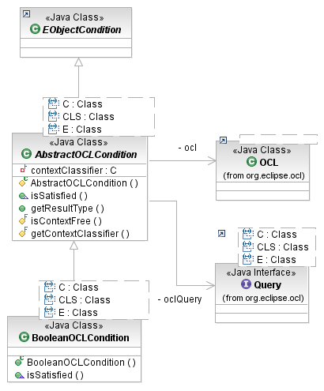

OCL basically is a query language in its own right, but sometimes it is useful to plug conditions specified in OCL into an existing query structure based on the EMF Model Query Framework. The org.eclipse.emf.query.ocl plug-in provides the API to do that.
OCL is very good at specifying boolean-valued conditions, which are exactly what a query needs to determine whether to accept an object. The BooleanOCLCondition class uses the MDT OCL API to parse and evaluate an OCL constraint.

[as SVG]
The BooleanOCLCondition is a generic class, with type parameters corresponding to the like-named parameters of the OCL class. The simplest way to construct one is with an OCL environment instance, the boolean-valued OCL expression as a string, and the classifier in which context to parse the constraint. For example, for an Ecore-based model:
// create an OCL environment for the Ecore metamodel
OCL ocl = org.eclipse.ocl.ecore.OCL.newInstance();
// create an OCL condition that matches that either are mysteries or are shorter
// than 200 pages
EObjectCondition tolerableRead = new BooleanOCLCondition<EClassifier, EClass, EObject>(
ocl.getEnvironment(),
"self.category <> BookCategory::Mystery implies self.pages < 200",
EXTLibraryPackage.Literals.BOOK);
// search the whole library system
Library mainBranch = getMainBranch();
IQueryResult result = new SELECT(new FROM(mainBranch), new WHERE(tolerableRead));
for (Object next : result) {
System.out.println("I can read " + ((Book) next).getTitle());
}
The example above illustrate an OCL condition that is parsed in the context of a specific classifier, namely Book. Sometimes, however, it happens that a model has different classifiers that have like-named features that have the same meaning, but are not defined as a single, common feature. This may happen especially in models of heterogeneous metamodels. Consider the case of the ENamedElement metaclass in Ecore and NamedElement in UML. Both of these define a name property that means the same thing, but they are defined independently. How do we use OCL to query elements named "MyStereotype" in a UML2 profile, which contains UML classes Ecore classes having the same names?
We can use a context-free OCL condition. We construct a BooleanOCLCondition without specifying a context classifier. This causes the condition to evaluate itself on any element in which context it parses, as it were by accident:
OCL ocl = org.eclipse.ocl.ecore.OCL.newInstance();
// create an OCL condition that looks for the name "MyStereotype"
EObjectCondition byName = new BooleanOCLCondition<EClassifier, EClass, EObject>(
ocl.getEnvironment(),
"self.name = 'MyStereotype'",
null); // no context classifier
// search a UML Profile
org.eclipse.uml2.uml.Profile profile = getMyProfile();
IQueryResult result = new SELECT(new FROM(mainBranch), new WHERE(byName));
for (Object next : result) {
if (next instanceof org.eclipse.emf.ecore.EClassifier) {
System.out.println("Found the Ecore representation: " + ((EClassifier) next).getName());
} else if (next instanceof org.eclipse.uml2.uml.Classifier) {
System.out.println("Found the UML representation: " + ((Classifier) next).getName());
} else {
System.out.println("Unexpected result: " + next);
}
}
Copyright (c) 2000, 2007 IBM Corporation and others. All Rights Reserved.